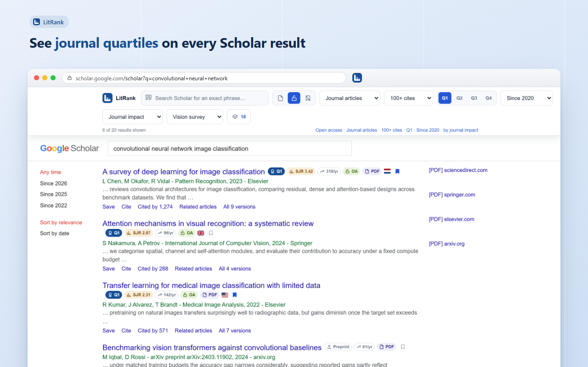
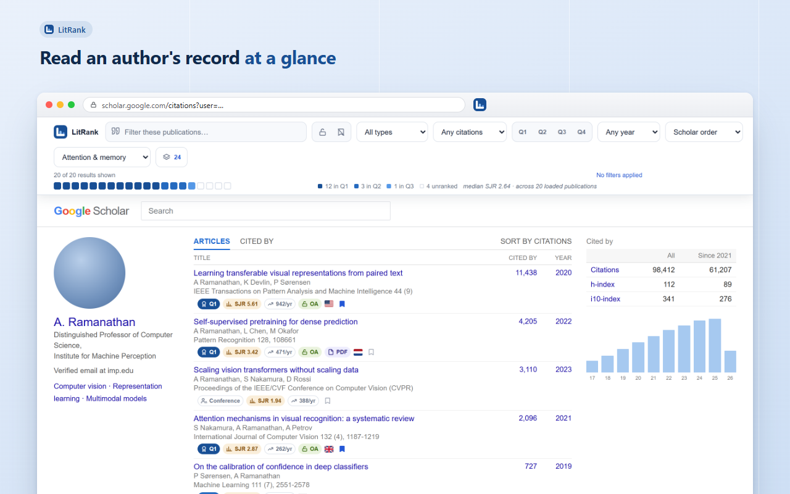
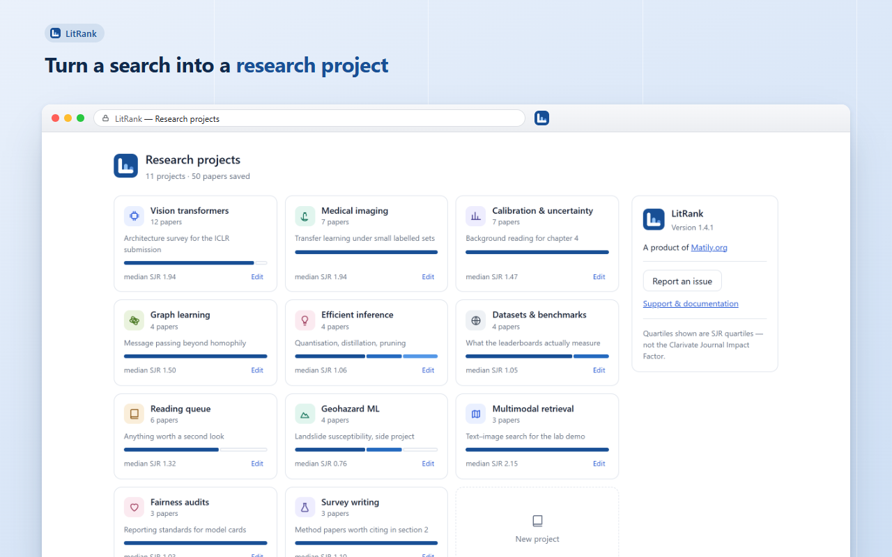
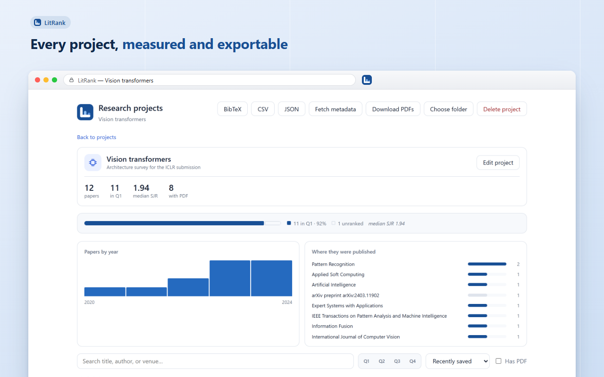

A survey of deep learning for image classification
Google Scholar tells you how many times a paper was cited. It tells you nothing about where it was published. LitRank adds the quartile, the impact score and the open-access status to every result — then lets you turn a search into a research project.
Scholar is the best place to find papers and the worst place to judge them. LitRank fills in the part that is missing, on the page you are already on.
Q1 to Q4 on every result, from Scimago Journal Rank. One hue, stepped light to dark, so rank reads as rank rather than as colour-coding you have to learn.
The journal's SJR score and h-index — plus citations per year, because a 2004 paper with 400 citations is not outperforming a 2023 paper with 90.
Open-access and DOAJ indicators, a direct-PDF marker, and the country of publication — so you stop opening things you cannot read.
Show only Q1 and Q2. Exclude preprints. Set a citation floor. Hide what you have already triaged. Sort by journal impact without losing Scholar's own order.
Save into named projects with their own icon and colour. One paper can belong to several. Each project reports its quartile mix, median impact and top venues.
BibTeX, CSV or JSON from any project, with DOIs recovered where Scholar hid them. Fetch full metadata from Crossref, or batch-download the PDFs you can reach.
If more than one journal could fit, LitRank shows nothing rather than guessing.
Scholar abbreviates and truncates venue names, and a truncated name can match several real journals. An Unranked badge means the venue was not matched — never that it scored badly. A tool that quietly guesses is worse than one that admits the gap, because from the outside you cannot tell the two apart.
Nothing to open, nothing to configure. Install it, and Google Scholar is simply better the next time you search.
Quartile, impact score, citation rate, open access and country — on the page you were already reading. The bar above filters what you see without leaving Scholar.

Profile pages get the same badges, plus a distribution of the loaded publications across quartiles and their median impact. One square per paper — you are counting, not estimating.

Bookmark anything worth keeping into a named project. Each card shows how many papers it holds, how they spread across quartiles, and the median impact of the venues.

Quartile mix, median impact, a publication-year histogram and the venues you are actually citing. Then export it, complete it from Crossref, or sync it to a folder.

Chrome, Edge or Firefox. No account, no sign-up, no configuration screen.
Open Google Scholar. Badges and the filter bar appear on results, profiles and Scholar Labs, across 30+ country domains.
Bookmark into a project, then export BibTeX when you sit down to write.
No account, no sync service, no analytics. Nothing you search for or read is transmitted anywhere, because there is nowhere for it to go.
The ranking data ships inside the extension and is read on your own machine. The only outbound request is to Crossref, and only when you press Fetch metadata.
No paid tier, no trial, no advertising, no data sale. Built by Matily, a non-profit studio, and released under the GPL.
Install it once. The next time you search Google Scholar, you will know where everything was published.